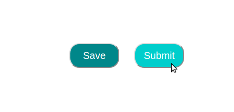

Users can navigate to the data entry page from the summary page. The summary page for any package is reached by clicking on that package on the sidebar.
On the summary page, users can click the "View/Edit Metadata" button to go to the metadata page.
Once the package has been created with the exact number of samples, if a user would like to add more samples to their package they can use the "Add Sample" feature.
In order to use the "Add Sample" feature, users can click the "Add Sample" button located at the bottom left of the meta data page
After clicking the "Add Sample" button, a new sample is appended to the package. The sample is added to the spreadsheet with a hot-reload that doesn't change or modify any saved or unsaved data currently in the spreadsheet
Users are able to add additional columns to their data if they have the "Expandable" permission from TGen North. If you need the ability to add columns to your data, but current don't see an "Add Column" button, then please contact your TGen North point of contact in order to modify your account permissions.
In order to use the "Add Column" feature, users can click the "Add Column" button located at the bottom left of the meta data page
After clicking the "Add Column" button, users are prompted with a dialog box asking for the name of the column. Enter the name for the data field you'd like to add to the sample and click "ok"
After submitting the column name, a new column is appended to the package. The column is added to the spreadsheet with a hot-reload that doesn't change or modify any saved or unsaved data currently in the spreadsheet.
**Exiting the page without adding any data to the new column field will not save the new column. If this happens users need to re-add the new column upon returning to the page**
Data submitted to the server is checked for type both at the front and back end of the collaborator portal. Data submitted to the server is checked for completeness at the back end of the collaborator portal
If data entered into a column is the wrong type (ex. Text type in a Numeric field), then that field will highlight red to indicate the error
If a user tries to submit incorrectly typed data to the database, the user will recieve an error message and the data will not be submitted. The error message indicates which sample has the error and in what field. It also indicates which entry type is needed to fix the problem. In order to fix the error, find the cell with the error by locating the row (Indicated by sample id) and the column (indicated by column name). Once you have found the cell, modify the data so that it conforms to the type indicated in the error message
Numeric: Numeric types consist only of numbers. Decimals and commas may be used to indicate fractional numbers (Ex. 10,0055 or 10.0055), but may not be used to seperate thousands (ex. 5,000,000 is not accepted).
Text: Any entry, even numeric ones are categorized as text entries
Dropdown: Cell entry is accomplished via dropdown menu. This type is enforced by the spreadsheet
Upon data submission, data is checked for completeness. Any empty cells will result in an error indicating the location of the missing cell. In order to correct this error, find the missing cell (Row referenced by sample id, column referenced by column name), and then input the data for the sample.
Users are able to save their data at any time. Saving the data does not submit the sample information permanently, as all saved data is able to be edited later. Incorrect or incomplete data can still be saved insantly.
The "Save" button is located at the bottom right of the meta data page.
Users are able to save even incomplete data.
If a user tries to navigate away from the page with unsaved data in their spreadsheet, the collaborator portal prompts the user to save the data first. Clicking "Leave" will navigate the user away from the page without saving. If a user decides to save the data before leaving, they need to click "Cancel" and then hit the "Save" button. Now that the data is successfully saved, users are able to navigate away without any further dialog pop-ups.
Upon successfully saving package data, users see a "Package Saved Successfully" dialog box.
Data submission sends a packages data to the Scientists at TGen North. This should only be done when the user is satisified with both the accuracy and completeness of their packages data, as after submission users are unable to edit the data anymore.
The "Submit" button is located at the bottom right of the meta data page.
After clicking the "Submit" button, the collaborator portal asks the user if they are satisifed with their data entry. After submission, data cannot be edited by the user.
">Upon a successfuly submission with no errors, users see a "Success" message.